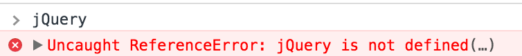
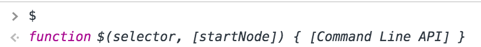
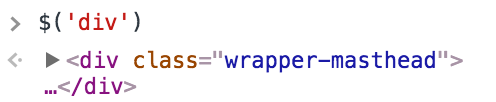
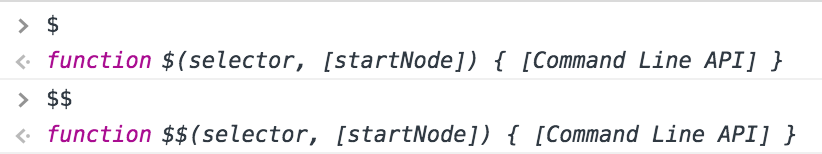
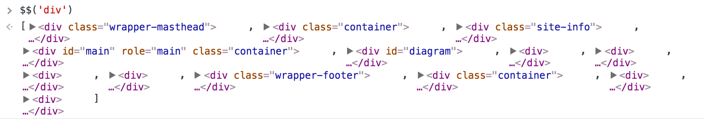
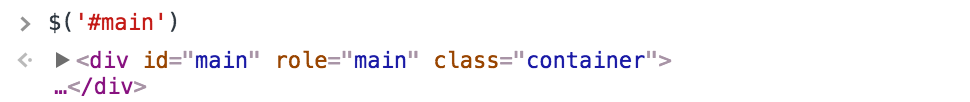
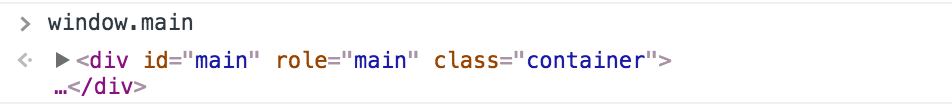
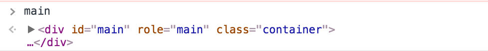

console
This area I've been saving for sundries regarding the console. It's a pretty powerful little area within the browser you can use to access lots of information. Every now and then you'll find yourself making a great discovery in the console and you'll want to grab what you find there and pull it out.
This is a little trick I found deep on Stack Overflow that hopefully they will make more accessible in the future:
/*in console*/
Data Object = {...};
// right click on the edge of the Object
// store as a temporary variable
// creates 'temp1'
copy(temp1) // and then run this command
// to make this is available for
// pasting in text editor.
None of this stuff is mine, but was revealed to me by Scott Moss, our AngularJS lecturer, who must be involved with web standards and gets this information in advance. If you go to the console in chrome, certain methods that aren't common practice are made available.
Long story made short:
In the beginning the DOM was a bear to deal with.
They made jQuery, which fixed alot of DOM problems.
They later just fixed browser issues, and then built some more powerful features into Chrome.
Now I'm going to show you some next gen tricks that you don't need jQuery for that are in Chrome.
If this is too much of a fast forward and you want to see some of what jQuery does to help, go here. Some favor writing out the full JS nowadays (as I do).
I opened a console (⌘+option+j) in my blog. To prove jQuery is absent:

But... $ is here. Strange right?

What does this do without jQuery present? This would default to theequivalent of querySelectorAll, howvever this is something different, this is querySelectTheFirst ThatComesUp.

What imitates querySelectorAll? What about $$?

The double $ command line API helps us get querySelectorAll functionality.

What's nice is that it also gives us access to things as a simple array of items, rather that the large confusing jQuery object.
In this same vein of new Chrome tools, you may have accessed the ID of an object typing this stuff out.

An id has always been unique. This is the very definition of unique. This id has always been available on the window object.

This accesses the same information as $('#main'). However, you can take this trick even further. Even without the 'window.' present, it can figure out what to do next.

Pretty cool right?
This is a stub, there's more coming